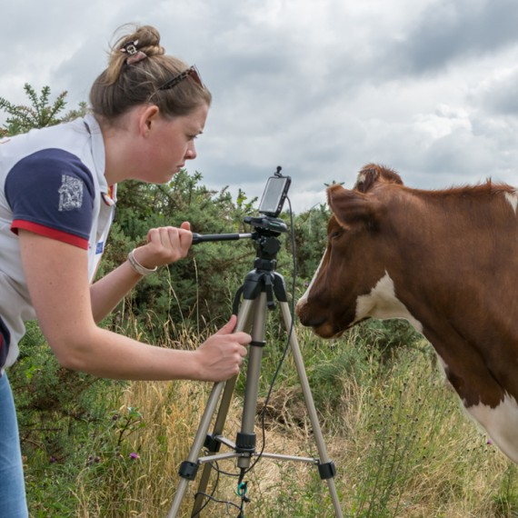
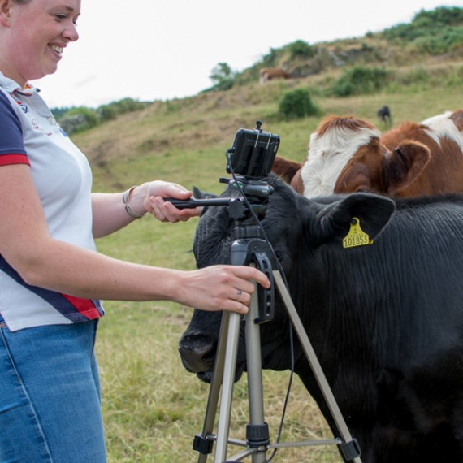

First of all,a huge thank you to everyone who has donated to ourcrowdfunder and to everyone who has shared our campaign video. In just over a week we have raised an incredible 22% of our total! We are a little overwhelmed by your messages of support in particular. Thank you for believing in us.
Posted on 17 September 2018, by Brian
Several months ago, just after the excitement of the cows and calves going out to pasture for the summer, we took a moment to quietly watch them, all relaxed and happy munching away on the lush green grass in beautiful countryside.
We decided to have a go on Tuesdays, re-named #coosdays on Scottish social media (courtesy of VisitScotland who like to demonstrate each Tuesday just how attractive cows look in the Scottish countryside).
 Posted on 21 August 2018, by Lizzie
Return Home